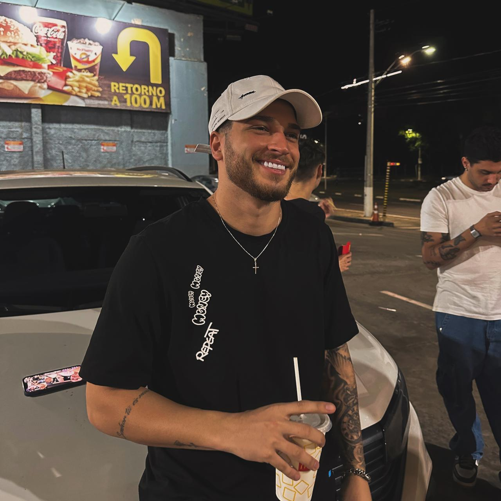

Desenvolvedor Frontend
Estudante de Sistemas para Internet, apaixonado por tecnologia e desenvolvimento web. contribuindo para projetos inovadores e impactantes.
Atualmente, estou focado em aprimorar minhas habilidades além de explorar o desenvolvimento de aplicações web responsivas e acessíveis. Estou sempre aberto a novos desafios e oportunidades de aprendizado, buscando crescer profissionalmente .
Além disso, sou um entusiasta de design e UX, buscando criar interfaces intuitivas e agradáveis para os usuários. Acredito que a combinação de habilidades técnicas e sensibilidade estética é fundamental para o sucesso de um projeto web.